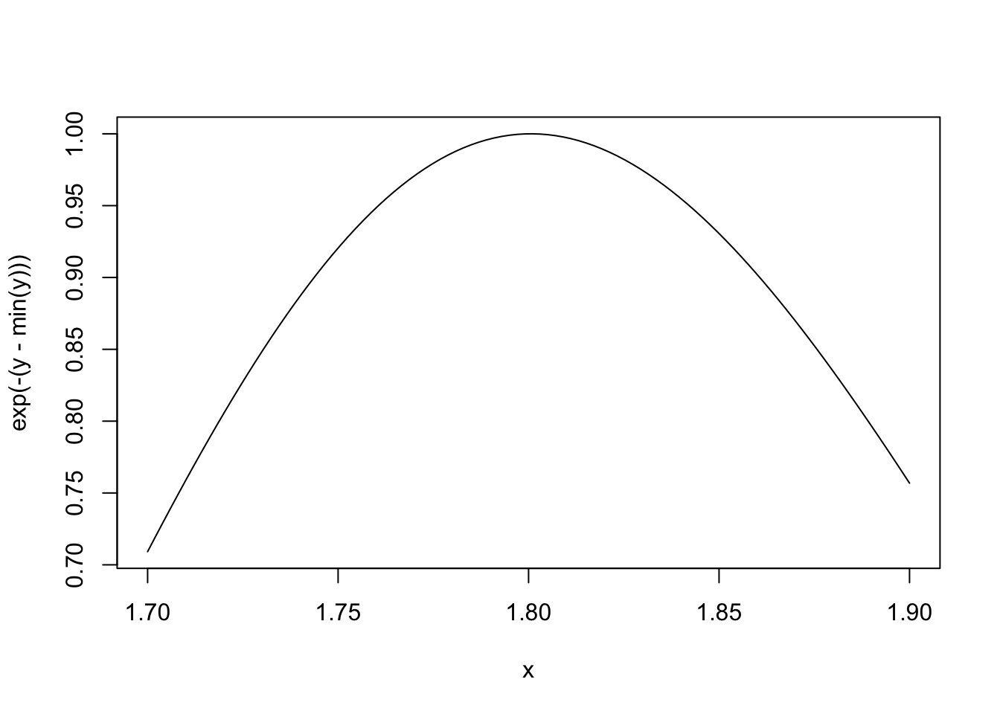
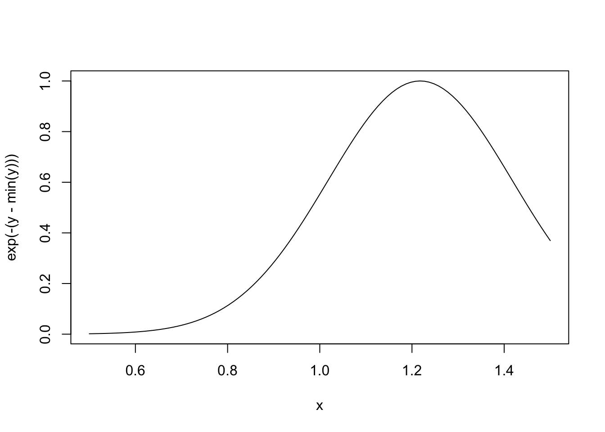

15 Scoping Rules of R
15.1 A Diversion on Binding Values to Symbol
How does R know which value to assign to which symbol? When I type
how does R know what value to assign to the symbol lm? Why doesn’t it give it the value of lm that is in the stats package?
When R tries to bind a value to a symbol, it searches through a series of environments to find the appropriate value. When you are working on the command line and need to retrieve the value of an R object, the order in which things occur is roughly
- Search the global environment (i.e. your workspace) for a symbol name matching the one requested.
- Search the namespaces of each of the packages on the search list
The search list can be found by using the search() function.
> search()
[1] ".GlobalEnv" "package:stats" "package:graphics"
[4] "package:grDevices" "package:utils" "package:datasets"
[7] "package:methods" "Autoloads" "package:base" The global environment or the user’s workspace is always the first element of the search list and the base package is always the last. For better or for worse, the order of the packages on the search list matters, particularly if there are multiple objects with the same name in different packages.
Users can configure which packages get loaded on startup so if you are writing a function (or a package), you cannot assume that there will be a set list of packages available in a given order. When a user loads a package with library() the namespace of that package gets put in position 2 of the search list (by default) and everything else gets shifted down the list.
Note that R has separate namespaces for functions and non-functions so it’s possible to have an object named c and a function named c().
15.2 Scoping Rules
The scoping rules for R are the main feature that make it different from the original S language (in case you care about that). This may seem like an esoteric aspect of R, but it’s one of its more interesting and useful features.
The scoping rules of a language determine how a value is associated with a free variable in a function. R uses lexical scoping or static scoping. An alternative to lexical scoping is dynamic scoping which is implemented by some languages. Lexical scoping turns out to be particularly useful for simplifying statistical computations
Related to the scoping rules is how R uses the search list to bind a value to a symbol
Consider the following function.
This function has 2 formal arguments x and y. In the body of the function there is another symbol z. In this case z is called a free variable.
The scoping rules of a language determine how values are assigned to free variables. Free variables are not formal arguments and are not local variables (assigned insided the function body).
Lexical scoping in R means that
the values of free variables are searched for in the environment in which the function was defined.
Okay then, what is an environment?
An environment is a collection of (symbol, value) pairs, i.e. x is a symbol and 3.14 might be its value. Every environment has a parent environment and it is possible for an environment to have multiple “children”. The only environment without a parent is the empty environment.
A function, together with an environment, makes up what is called a closure or function closure. Most of the time we don’t need to think too much about a function and its associated environment (making up the closure), but occasionally, this setup can be very useful. The function closure model can be used to create functions that “carry around” data with them.
How do we associate a value to a free variable? There is a search process that occurs that goes as follows:
- If the value of a symbol is not found in the environment in which a function was defined, then the search is continued in the parent environment.
- The search continues down the sequence of parent environments until we hit the top-level environment; this usually the global environment (workspace) or the namespace of a package.
- After the top-level environment, the search continues down the search list until we hit the empty environment.
If a value for a given symbol cannot be found once the empty environment is arrived at, then an error is thrown.
One implication of this search process is that it can be affected by the number of packages you have attached to the search list. The more packages you have attached, the more symbols R has to sort through in order to assign a value. That said, you’d have to have a pretty large number of packages attached in order to notice a real difference in performance.
15.3 Lexical Scoping: Why Does It Matter?
Typically, a function is defined in the global environment, so that the values of free variables are just found in the user’s workspace. This behavior is logical for most people and is usually the “right thing” to do. However, in R you can have functions defined inside other functions (languages like C don’t let you do this). Now things get interesting—in this case the environment in which a function is defined is the body of another function!
Here is an example of a function that returns another function as its return value. Remember, in R functions are treated like any other object and so this is perfectly valid.
The make.power() function is a kind of “constructor function” that can be used to construct other functions.
Let’s take a look at the cube() function’s code.
Notice that cube() has a free variable n. What is the value of n here? Well, its value is taken from the environment where the function was defined. When I defined the cube() function it was when I called make.power(3), so the value of n at that time was 3.
We can explore the environment of a function to see what objects are there and their values.
We can also take a look at the square() function.
15.4 Lexical vs. Dynamic Scoping
We can use the following example to demonstrate the difference between lexical and dynamic scoping rules.
What is the value of the following expression?
With lexical scoping the value of y in the function g is looked up in the environment in which the function was defined, in this case the global environment, so the value of y is 10. With dynamic scoping, the value of y is looked up in the environment from which the function was called (sometimes referred to as the calling environment). In R the calling environment is known as the parent frame. In this case, the value of y would be 2.
When a function is defined in the global environment and is subsequently called from the global environment, then the defining environment and the calling environment are the same. This can sometimes give the appearance of dynamic scoping.
Consider this example.
> g <- function(x) {
+ a <- 3
+ x+a+y
+ ## 'y' is a free variable
+ }
> g(2)
Error in g(2): object 'y' not found
> y <- 3
> g(2)
[1] 8Here, y is defined in the global environment, which also happens to be where the function g() is defined.
There are numerous other languages that support lexical scoping, including
- Scheme
- Perl
- Python
- Common Lisp (all languages converge to Lisp, right?)
Lexical scoping in R has consequences beyond how free variables are looked up. In particular, it’s the reason that all objects must be stored in memory in R. This is because all functions must carry a pointer to their respective defining environments, which could be anywhere. In the S language (R’s close cousin), free variables are always looked up in the global workspace, so everything can be stored on the disk because the “defining environment” of all functions is the same.
15.5 Application: Optimization
NOTE: This section requires some knowledge of statistical inference and modeling. If you do not have such knowledge, feel free to skip this section.
Why is any of this information about lexical scoping useful?
Optimization routines in R like optim(), nlm(), and optimize() require you to pass a function whose argument is a vector of parameters (e.g. a log-likelihood, or a cost function). However, an objective function that needs to be minimized might depend on a host of other things besides its parameters (like data). When writing software which does optimization, it may also be desirable to allow the user to hold certain parameters fixed. The scoping rules of R allow you to abstract away much of the complexity involved in these kinds of problems.
Here is an example of a “constructor” function that creates a negative log-likelihood function that can be minimized to find maximum likelihood estimates in a statistical model.
> make.NegLogLik <- function(data, fixed = c(FALSE, FALSE)) {
+ params <- fixed
+ function(p) {
+ params[!fixed] <- p
+ mu <- params[1]
+ sigma <- params[2]
+
+ ## Calculate the Normal density
+ a <- -0.5*length(data)*log(2*pi*sigma^2)
+ b <- -0.5*sum((data-mu)^2) / (sigma^2)
+ -(a + b)
+ }
+ }Note: Optimization functions in R minimize functions, so you need to use the negative log-likelihood.
Now we can generate some data and then construct our negative log-likelihood.
> set.seed(1)
> normals <- rnorm(100, 1, 2)
> nLL <- make.NegLogLik(normals)
> nLL
function (p)
{
params[!fixed] <- p
mu <- params[1]
sigma <- params[2]
a <- -0.5 * length(data) * log(2 * pi * sigma^2)
b <- -0.5 * sum((data - mu)^2)/(sigma^2)
-(a + b)
}
<bytecode: 0x11eab2af8>
<environment: 0x11e2ddd58>
>
> ## What's in the function environment?
> ls(environment(nLL))
[1] "data" "fixed" "params"Now that we have our nLL() function, we can try to minimize it with optim() to estimate the parameters.
You can see that the algorithm converged and obtained an estimate of mu and sigma.
We can also try to estimate one parameter while holding another parameter fixed. Here we fix sigma to be equal to 2.
Because we now have a one-dimensional problem, we can use the simpler optimize() function rather than optim().
We can also try to estimate sigma while holding mu fixed at 1.
15.6 Plotting the Likelihood
Another nice feature that you can take advantage of is plotting the negative log-likelihood to see how peaked or flat it is.
Here is the function when mu is fixed.
> ## Fix 'mu' to be equalt o 1
> nLL <- make.NegLogLik(normals, c(1, FALSE))
> x <- seq(1.7, 1.9, len = 100)
>
> ## Evaluate 'nLL()' at every point in 'x'
> y <- sapply(x, nLL)
> plot(x, exp(-(y - min(y))), type = "l")
Here is the function when sigma is fixed.
> ## Fix 'sigma' to be equal to 2
> nLL <- make.NegLogLik(normals, c(FALSE, 2))
> x <- seq(0.5, 1.5, len = 100)
>
> ## Evaluate 'nLL()' at every point in 'x'
> y <- sapply(x, nLL)
> plot(x, exp(-(y - min(y))), type = "l")
15.7 Summary
- Objective functions can be “built” which contain all of the necessary data for evaluating the function
- No need to carry around long argument lists — useful for interactive and exploratory work.
- Code can be simplified and cleaned up
- Reference: Robert Gentleman and Ross Ihaka (2000). “Lexical Scope and Statistical Computing,” JCGS, 9, 491–508.